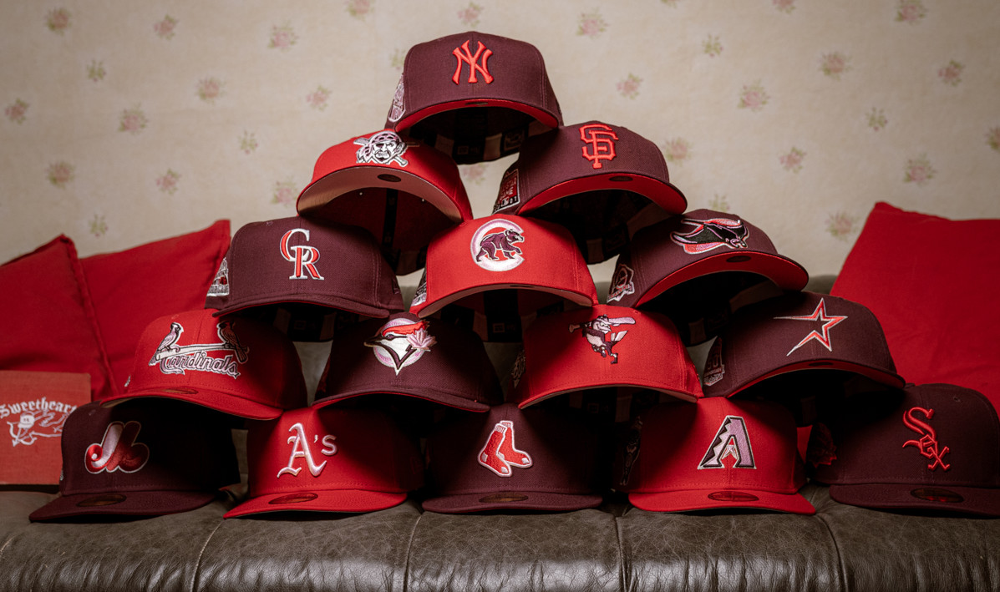
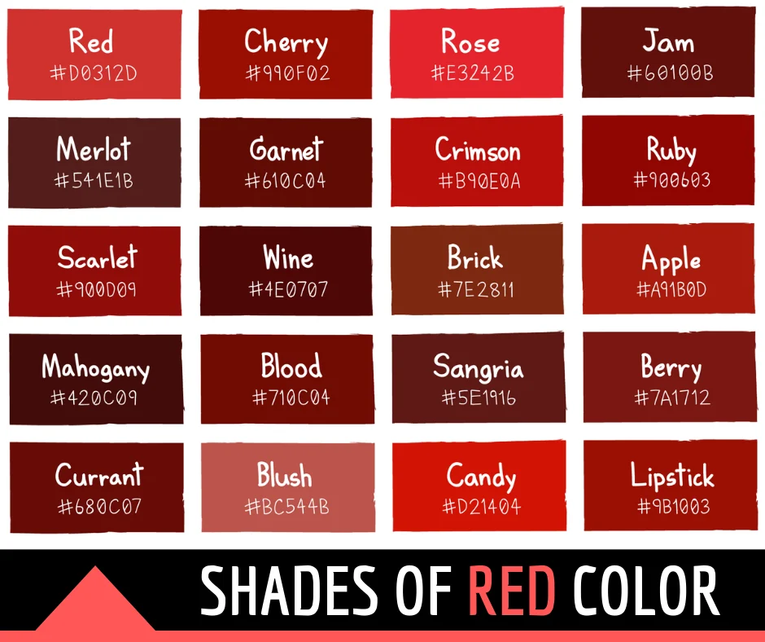

After learning that my unused transfer credits constitute "unsatisfactory academic progress" towards my degree, my student aid has been suspended. I now need to pay the tuition for the remainder of my program out-of-pocket, so I am selling my prized Red Hat Collection. I obviously love red hats, but I love spending thousands that I don't have on my education even more! Please help me fund my educational adventure, and enjoy a new red hat or two for yourself!
There are 256 red hats in total, hung up lining every possible space on my bedroom walls ... I think I've forgotten what color my walls are...
Just some of the available shades of red:

This collection has been happily approved by the Red Hat Society for its rarity and composition!
800.867.5309
Centre Hall
Rm# 404
Please include your desired hat quantities and color(s) in your inquiry. Pricing to be determined on a case-by-case basis. Thank you.